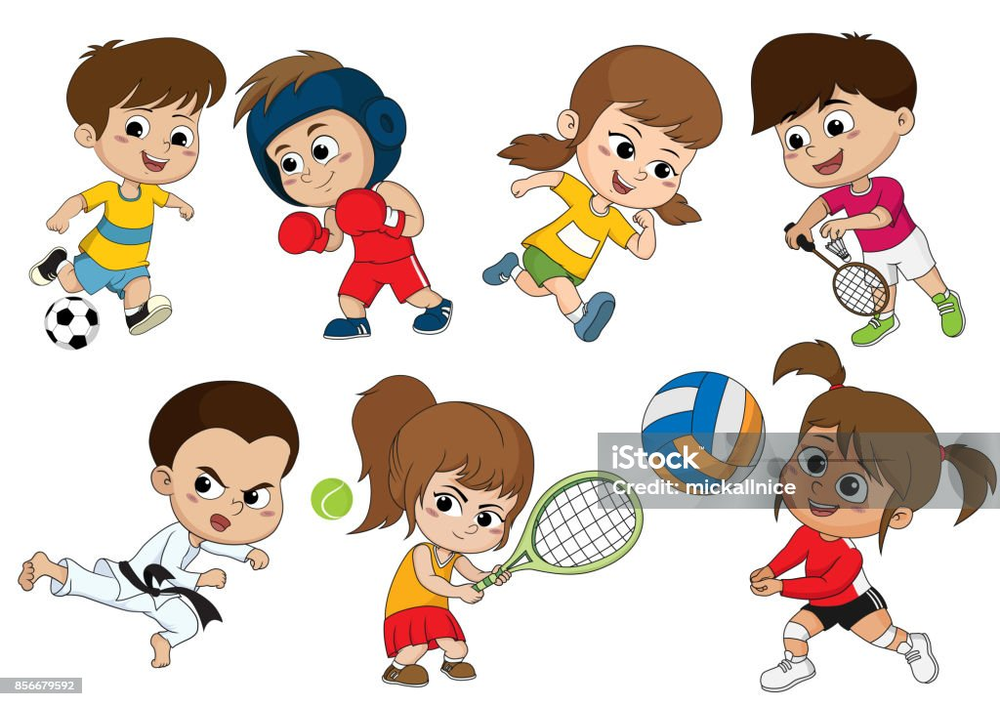
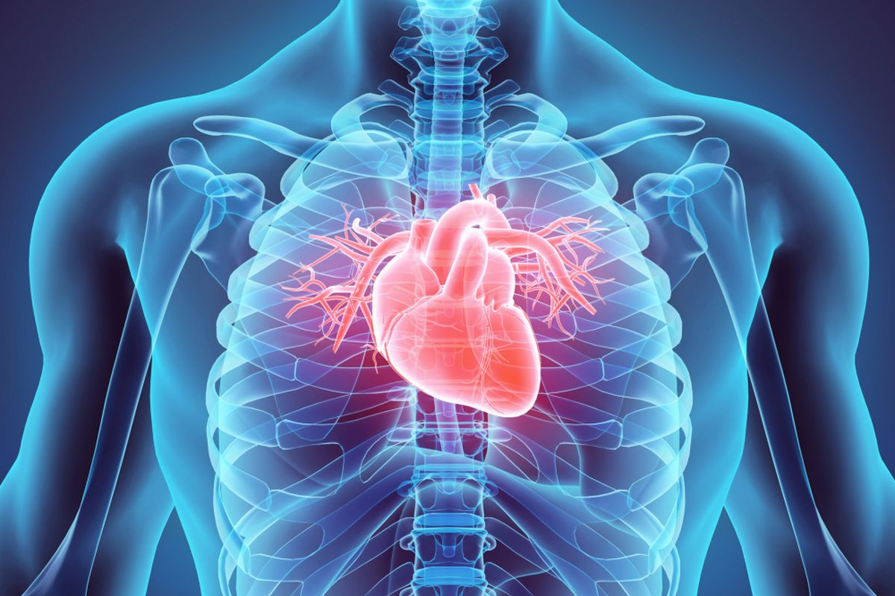
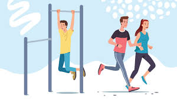

Selamat Datang!
Majalah Ini Membahas Manfaat Berolahraga Bagi Kesehatan.
Menjaga Kesehatan jantung
Olahraga sangat bermanfaat bagi kesehatan jantung karena meningkatkan kekuatan otot jantung, menurunkan tekanan darah, meningkatkan sirkulasi darah, dan mengurangi risiko berbagai penyakit jantung.
Menjauhkan dari bermacam- macam penyakit
hasiat awal dari berolahraga merupakan tingkatkan energi tahan badan supaya tidak gampang terkena penyakit. Kathleen Zelman, MPH, RD, LD, direktur kesehatan WebMD, menarangkan kala berolahraga badan hendak lebih leluasa bergerak..
Tentang Kami
Kami adalah tim yang peduli akan kesehatan dan ingin mengedukasi masyarakat tentang pentingnya berolahraga secara rutin guna menjaga kesehatan tubuh dan terhindar dari berbagai penyakit.